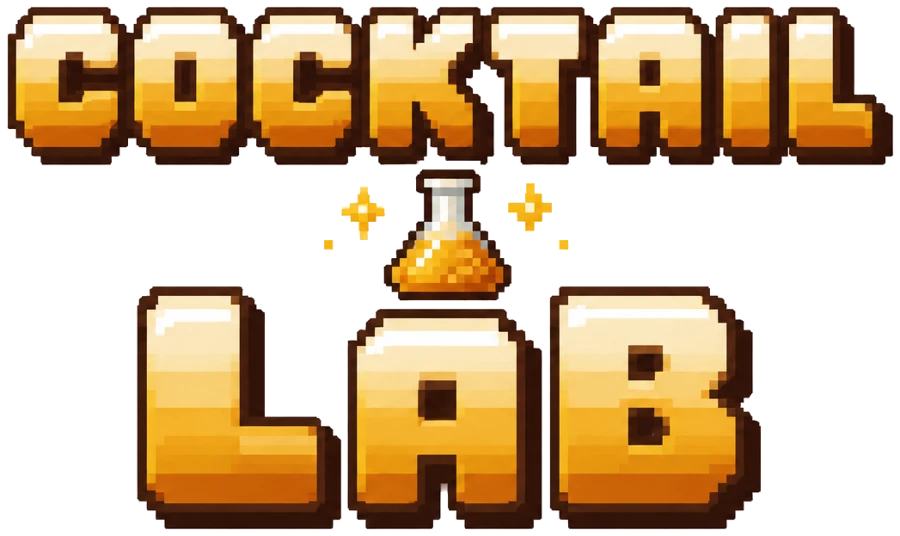
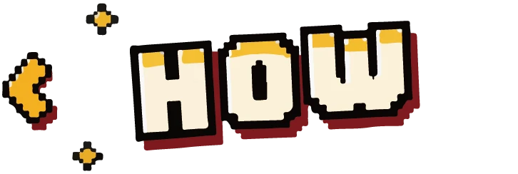
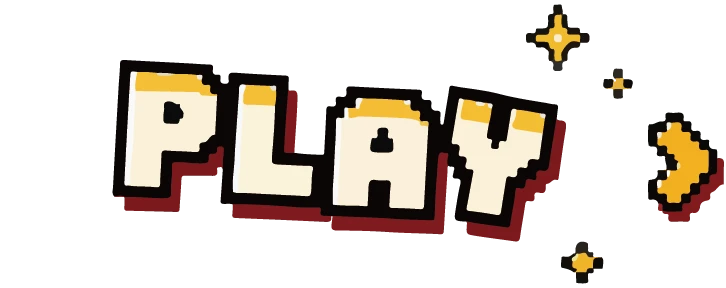

COCKTAIL LAB
- Pick the right glass, then the right ingredients.
- Choose the technique: SHAKE, STIR or BUILD. Wrong one ruins the drink.
- Shake your phone, stir in circles, or pour in order.
5 classics. Nail them all.
TAP TO START!
📋 MY TURN